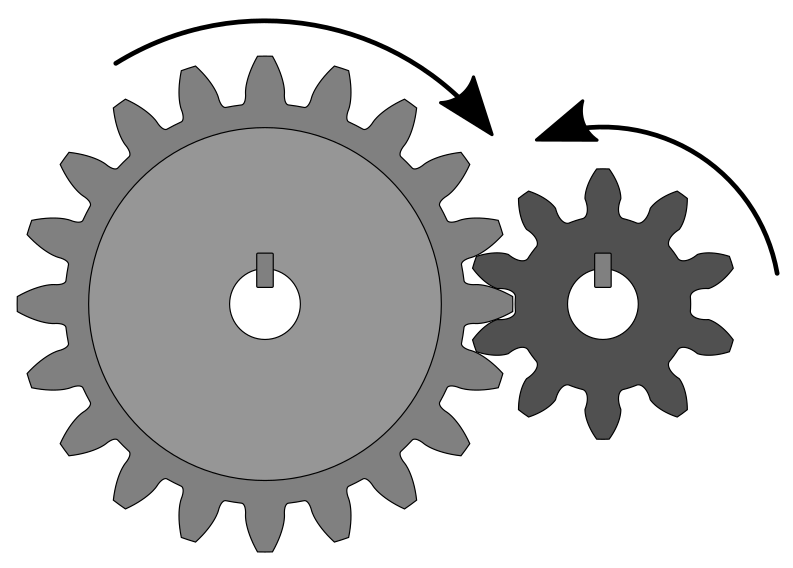

: Índex: `Gears '¶
Un engranatge és un mecanisme format per dues o més rodes dentades. Serveix per transmetre el moviment circular i transformar la velocitat i la força de la rotació.
Si les dues rodes tenen una mida diferent, la roda principal s’anomena ** corona ** i la roda menor s’anomena ** piñon **.
{kind=link}

Corona i engranatge de pinyons amb fletxes de gir de gir.¶
Una de les aplicacions d’engranatges més importants és la transformació de la velocitat de rotació d’un motor, generalment ràpid i amb poc parell de motor, a l’aplicació que ha de fer funcionar, generalment més lent i amb un parell més gran.
Per exemple, amb els engranatges, la velocitat de rotació del motor d’un cotxe es transforma a una velocitat inferior i amb un parell més gran de les rodes del cotxe.
: Índex: `Motor '¶
El parell del motor equival a la "força" amb la qual gira un eix. La força de disseny es reserva generalment en el cas d’una força que actua en línia recta. En el cas dels eixos giratoris, el parell del motor indica quina força rotativa s’ha d’aplicar a un metre de l’eix de rotació per produir el mateix efecte.
Per exemple, un motor de cotxe utilitari dièsel turbo sol tenir un motor aproximat de 250 Newton · Metro. Aquest parell motor equivalia a empènyer un eix rotatiu amb una palanca de palanca aplicant 250 Newton (uns 25 quilograms de força).
Els engranatges augmenten el parell (la força de rotació) en la mateixa proporció que redueix la velocitat de rotació. En el cas d’un engranatge que augmenti la velocitat de rotació, el parell del motor es reduirà en la mateixa proporció. Aquestes proporcions es produeixen en tots els mecanismes que transformen els moviments.
Un mecanisme que multiplica la força, alhora, reduirà la distància o la velocitat de moviment.
Càlcul d’engranatges¶
La velocitat de rotació de cada dents d’un engranatge depèn del nombre de dents.
La fórmula que relaciona les velocitats de dues rodes, és igual al nombre de dents del producte a causa de la velocitat angular segons la fórmula següent.
Ésser
Z1 = dents de la primera roda dental
N1 = Velocitat angular de la primera roda dental
Z2 = dents de la segona roda dental
N1 = Velocitat angular de la segona roda dental
La velocitat angular es mesura generalment en les revolucions ** per minut ** també escrita com a ** rpm **, cosa que significa el nombre de girs complets que gira la roda en un minut. Un motor típic sol tenir una velocitat angular en un rang de 1000 rpm a 6.000 rpm.
Exercici aerogenerador¶
En aquest cas, calcularem un engranatge que serveixi per multiplicar la velocitat de rotació d’un eix.
Un aerogenerador gira les fulles a una velocitat de 20rpm i ha de multiplicar aquesta velocitat a la velocitat del generador que és de 1000rpm. Si el pinyó connectat al generador té 15 dents. Quantes dents tindrà la corona?
El primer pas serà escriure les dades del problema.
A continuació, escrivim la fórmula i substituïm els valors coneguts.
Finalment esborrem l’equació i calculem el valor del desconegut.
A la pràctica, quan la relació entre les dents és tan gran, els trens d’engranatges amb més de dues rodes connectades entre si se solen utilitzar per reduir o augmentar la velocitat de rotació en diverses etapes.

Train d’engranatges que redueix considerablement la velocitat de gir del pinyó¶
Exercici d'automòbils elèctrics¶
Un cotxe elèctric té el motor connectat mitjançant un equip de reducció a les rodes. Sabem que la velocitat màxima del motor és de 9000rpm i que la velocitat màxima de les rodes és de 1500rpm. Si les dents més petites de l’engranatge haurien de ser 8 o més dents. Quantes dents ha de tenir cada equip?
Aquest exercici permet diverses solucions vàlides perquè no especifica la mida del pinyó.
El primer pas serà escriure les dades del problema. El motor estarà connectat al primer engranatge i a les rodes al segon engranatge.
L’engranatge 1 connectat al motor és el que gira més ràpidament i, per tant, és l’engranatge més petit dels dos. Ara escollirem una mida per a aquest petit engranatge, que és igual o superior a 8 dents.
A continuació, escrivim la fórmula i substituïm els valors coneguts.
Finalment esborrem l’equació i calculem el valor del desconegut.
El nombre de dents del segon engranatge connectat a la roda serà de 60 dents.